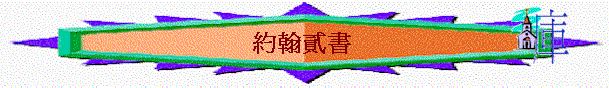

一.作者：使徒約翰
「作長老的寫信給蒙揀選的太太（或作：教會；下同），和他的兒女，就是我誠心所愛的；不但我愛，也是一切知道真理之人所愛的。」約貳1
1.有長老的身份
2.似乎是眾人所認識：沒有提自己的名字，只說是作長老的，似乎當時的信徒也認識他
3.寫作內容有約翰壹書的風格：例如提及「新命令」、「彼此相愛」、「不認耶穌基督是成了身來的」；這些字眼內容與約翰所寫的約翰壹書相似
～所以有理由相信是使徒約翰所寫的
二.對象：某教會
1.有人說是寫給某姊妹
～作者提及「寫信給蒙揀選的太太」，原
2.但應是指某教會
～因約翰的用語是用長老身份，也向「太太」表達一份愛，所以似乎這太太----應是當時某地方教會
～而作者應用擬人法將教會表達為太太，也不是出奇的事情，因聖經也曾引用新婦為教會，也用女子代表以色列人，而當時的人也會用擬人法寫作的
～而「他的兒女」應是指屬教會的肢體，而v.13提及「那蒙揀選之姊妹的兒女」應是指其他教會的信徒，若是單向某姊妹寫信，為何又這麼特別說她姊妹的兒女向她問安(若是親人，何需要透過作者問安呢？)
～而約翰為何不直接用教會名稱，可能只是一種寫作手法或當時教會受逼迫，為了謹慎而有此寫法
三.背景
1.有異端的迷惑(和約翰壹書相似)
「因為世上有許多迷惑人的出來，他們不認耶穌基督是成了肉身來的；這就是那迷惑人、敵基督的。」約貳7
～當時異端如諾斯底派，否認耶穌是成了肉身來，也不重視道德與愛，他們認為知識比這些更超越
2.接待的問題
～羅馬帝國的廣大版圖與穩定局勢，使得當時在境內旅行比從前要容易得多。羅馬人建的大道、各地駐軍所維繫的和平、加上全國通用的語言，更促進了旅行的便利，使得福音在第一世紀能夠迅速傳播。
～基督徒旅行，或是為買賣，或更重要的，是為宣教；當他們來到一個城市，會住在哪裡呢？「那時不像現在一樣，有舒適的旅館，甚至鄉下連小客棧也沒有」（Findlay）。此外，按照蘭塞的說法，「古時的旅店……聲名狼藉，……旅店的主人受人鄙視，在羅馬法裡面常提到他們品性不良」。「旅店以骯髒、跳蚤出名」，「旅店老闆以貪婪著稱」（Barclay）。所以，基督徒旅行的時候，地方教會的成員就應當接待他們。新約很多地方都提到這種習慣。例如：呂底亞在腓立比、耶孫在帖撒羅尼迦、該猶在哥林多、傳福音的腓利在該撒利亞、居比路人拿孫在耶路撒冷，都曾接待過保羅（徒16:15，17:7；羅16:23；徒21:8、16）。
～這種接待卻很容易被人利用。有一些假教師自稱是基督徒，信徒是否應該接待他們？還有一些人顯然是江湖郎中，或冒充資歷的假先知，他們的出發點是貪財而非教義，就是想住在別人家中，白吃白喝，騙錢花用。我們讀約翰二書、三書時，必須了解這種背景，因為這位「長老」指示他們，應該接待誰、拒絕誰，理由為何。他寫道，真正的基督徒宣教士可以藉他們所傳的信息和做事的動機分辨出來（參：約貳7）；如果他們不是為圖利，而是為主的名（約叁7），就應該接待，並且以「配得過神」的方式，幫助他們往前行（約叁6）。
～在《十二使徒遺訓》中也有類似的指示，這份有關教會秩序的手冊，寫於第一世紀末，是敘利亞一帶鄉村教會的指南43。其中假定旅行的基督徒會拜訪教會。每一個人都要經過查驗，以分辨真假（十一7、11，十二1）。這些測驗包括他的教訓（十一1～2）、他的動機──尤其是他對金錢、伙食和住處的態度（十一5～6、9、12，十二2～5），以及他的道德行為（十一8、10）。
＜＜參考丁道爾聖經註釋＞＞
四.寫作目的
1.提醒信徒重視彼此相愛
「太太啊，我現在勸你，我們大家要彼此相愛。這並不是我寫一
條新命令給你，乃是我們從起初所受的命令。」約貳5
2.提醒信徒小心異端
「因為世上有許多迷惑人的出來，他們不認耶穌基督是成了肉身
來的；這就是那迷惑人、敵基督的。」約貳7
3.提醒信徒在接待上要謹慎
「若有人到你們那裡，不是傳這教訓，不要接他到家裡，也不要
問他的安；」約貳10
五.本書主題----真理與愛心
「恩惠，憐憫，平安從父神和他兒子耶穌基督在真理和愛心上必常與我們同在！」約貳3
～作者要強調信徒要有真理，在接待上要謹慎，要小心異端，另外，信徒要繼續遵行真理----特別要彼此相愛
六.大綱
1.真理與主內結連(1-3)
2.真理與彼此相愛(4-6)
3.真理與接待問題(7-11)
4.真理與喜樂滿足(12)
問安(13)
七.內容
主題：真理與愛心
1.真理與主內結連
A.真理使信徒結連
「作長老的寫信給蒙揀選的太太（或作：教會；下同），和他的兒女，就是我誠心所愛的；不但我愛，也是一切知道真理之人所愛的。愛你們是為真理的緣故，這真理存在我們裡面，也必永遠與我們同在。」約貳1-2
「用和平彼此聯絡，竭力保守聖靈所賜合而為一的心。身體只有一個，聖靈只有一個，正如你們蒙召同有一個指望。一主，一信，一洗，」弗4:3-5
～作長老的能視教會為太太及信徒為兒女，他也能誠心愛他們，而且不單他愛，其他信徒也愛，原因何在？因是「為真理的緣故」
～信徒信主後，有真理在內心，這真理不因時間會流失，是長存的
～信徒之間彼此有共同的真理，共同的信仰，共同的主，他們所相信的使他們連在一起，有愛的關係
～真理也推動他們要合一
B.真理使信徒蒙恩
「恩惠，憐憫，平安從父神和他兒子耶穌基督在真理和愛心上必常與我們同在！」約貳3
～因著我們有共同的真理，也有主無條件的愛，所以我們可得著神的恩惠，憐憫與平安
～從前在不義之中，得不著神的眷顧，也是惹神發怒，但因著我們信真理，行真理，也因主的愛使我們從新得神的恩
2.真理與彼此相愛
A.欣賞信徒遵行真理
「我見你的兒女，有照我們從父所受之命令遵行真理的，就甚歡喜。」約貳4
～真理不單是頭腦的知識，而是要行出主的命令來，異端的問題是單有知識而不行出主的命令！
B.勸導信徒彼此相愛
～既然信徒過往行真理，現在更要行出真理所講的命令----就是彼此相愛！
～這愛有以下特質
a.是彼此的
～不是單一個人，是整體互相去愛
b.是命令
～從起初已領受過了的，無論想不想，這是命令！是從神來的！
c.是要行出來的
～行出這命令才是愛，愛是要行出來，不是單是規條、知識，而是要行出的！主的命令也是愛
3.真理與接待問題
A.要知道
「因為世上有許多迷惑人的出來，他們不認耶穌基督是成了肉身來的；這就是那迷惑人、敵基督的。」約貳7
「凡越過基督的教訓、不常守著的，就沒有神；常守這教訓的，就有父又有子。」約貳9
～作者提及「因為」，代表為何約翰提他們要行出主命令與真理呢？因為信徒要知道將來有些不行真理的人出現，他們會迷惑許多人不守主的命令，他們有以下特點
a.關乎他們的信仰：不認耶穌基督是成了肉身來，否認耶穌的神人二性，否認耶穌的降生及在地上所作的工
b.關乎他們的工作：迷惑人的
c.關乎他們的人數：不只一人
d.關乎他們的立場：敵基督的
e.關乎他們的教訓：與基督的教訓不同
f.關乎他們的行為：不常守主的話
g.關乎他們的本質：沒有神
～信徒要知道及曉得分辨
B.要小心
「你們要小心，不要失去你們（有古卷：我們）所做的工，乃要得著滿足的賞賜。」約貳8
「我希奇你們這麼快離開那藉著基督之恩召你們的，去從別的福音。」加1:6
～信徒用心去傳揚福音，使人歸向真神，但若不小心，容許異端迷惑人離開真道，令之前所作的工白白浪費了！
～另外信徒在地上的工作是守著所領所的道，一生要相信，若中間不小心受動搖，將來的賞賜也受虧損
C.不接待
「若有人到你們那裡，不是傳這教訓，不要接他到家裡，也不要問他的安；」約貳10
「給人行按手的禮，不可急促；不要在別人的罪上有分，要保守自己清潔。」提前5:22
～當時的信徒是會接待從遠方來佈道的人，會讓他們在家中居住，款待他們
～若信徒接待異端，問他們安，令他們覺得有支持，幫他們可傳禍音，信徒就在他們的惡行上有分了！
4.真理與喜樂滿足
「我還有許多事要寫給你們，卻不願意用紙墨寫出來，但盼望到你們那裡，與你們當面談論，使你們的喜樂滿足。」約貳12
「我們將這些話寫給你們，使你們（有古卷：我們）的喜樂充足。」約壹1:4
～約翰還有很多事情想及真理想約信徒談論的，而所講的事可使他們的喜樂滿足
～因為真理使人行在主的旨意中，自然可與神及信徒有更深入相交，也因著認識真理，相信真理，活出主道而得著屬天的賞賜與喜樂
問安
「你那蒙揀選之姊妹的兒女都問你安。」約貳13
～「你那蒙揀選之姊妹的兒女」可能是指其他教會的信徒也都問他們安